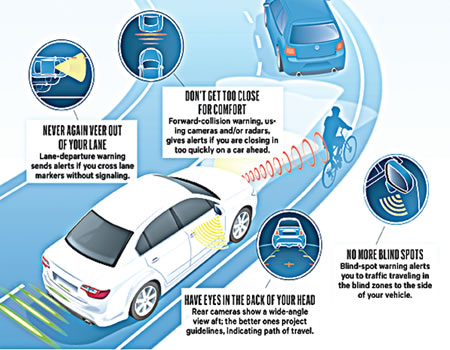
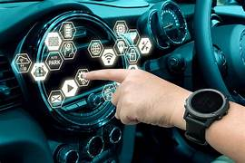

Key Features
Advanced Safety Features

Advanced safety features in cars refer to sophisticated technologies and systems designed to enhance the safety of drivers, passengers, and pedestrians. These features typically include innovative sensors, cameras, and software algorithms that continuously monitor the vehicle's surroundings and assist the driver in avoiding accidents or minimizing their impact.
- Collision avoidance systems: These systems use sensors to detect potential collisions with other vehicles, pedestrians, or obstacles and provide warnings to the driver or even automatically apply brakes to prevent accidents.
- Lane departure warning/alert: This feature alerts the driver when the vehicle begins to drift out of its lane without signaling, helping to prevent unintentional lane departures and potential collisions.
- Adaptive cruise control: This system automatically adjusts the vehicle's speed to maintain a safe distance from the vehicle ahead, reducing the need for constant manual adjustments by the driver and helping to prevent rear-end collisions.
- Blind-spot monitoring: Using sensors or cameras, this feature alerts the driver when there is a vehicle in their blind spot, reducing the risk of collisions during lane changes.
- Automatic emergency braking: This technology automatically applies the brakes if it detects an imminent collision, helping to reduce the severity of accidents or even prevent them entirely.
- Rear cross-traffic alert: This system warns the driver of approaching vehicles or pedestrians when backing out of parking spaces, reducing the risk of collisions in busy parking lots or driveways.
Smart Connectivity

Smart connectivity in cars refers to the integration of technology that allows vehicles to connect to the internet and interact with other devices, services, and platforms. Here are some key components and features of smart connectivity in modern cars:
Infotainment Systems:
Modern cars often come equipped with advanced infotainment systems that provide access to a wide range of entertainment, communication, and navigation features. These systems typically include touchscreen displays with intuitive interfaces, allowing drivers and passengers to easily access music, podcasts, navigation maps, and smartphone apps.
Apple CarPlay and Android Auto:
Apple CarPlay and Android Auto are software platforms that enable seamless integration of smartphones with the car's infotainment system. They allow users to mirror their smartphone's interface on the car's display, providing access to features like phone calls, messaging, music streaming, and navigation using familiar apps and voice commands.
Voice Recognition:
Many modern cars feature voice recognition systems that allow drivers to control various functions of the vehicle and access information hands-free. Drivers can use voice commands to make phone calls, send text messages, adjust climate control settings, and navigate to destinations, enhancing safety and convenience on the road.
Connected Navigation:
Connected navigation systems utilize real-time traffic data, online mapping services, and predictive algorithms to provide accurate and up-to-date routing information. These systems can automatically reroute drivers around traffic congestion, road closures, and other obstacles, optimizing travel time and fuel efficiency.
Remote Vehicle Control:
Smart connectivity enables remote control of certain vehicle functions through smartphone apps or web portals. Users can remotely lock and unlock doors, start the engine, adjust climate settings, and locate the vehicle using GPS tracking. This feature enhances convenience and security, allowing drivers to manage their vehicles from anywhere.
Telematics Services:
Telematics systems collect and transmit data about the vehicle's performance, location, and driving behavior to remote servers for analysis. This data can be used to monitor vehicle health, diagnose issues, and provide proactive maintenance alerts to drivers and service centers, improving overall reliability and efficiency.
In-Car Wi-Fi Hotspots:
Some vehicles offer in-car Wi-Fi hotspots that allow passengers to connect their smartphones, tablets, and other devices to the internet while on the go. This feature enables online browsing, streaming, and productivity tasks, making long journeys more enjoyable and productive for passengers.
Over-the-Air (OTA) Updates:
Smart connectivity enables manufacturers to deliver software updates and enhancements to vehicles over the air, similar to how smartphones receive updates. OTA updates can improve performance, add new features, and address security vulnerabilities without requiring a visit to the dealership, ensuring that vehicles stay up-to-date throughout their lifespan.